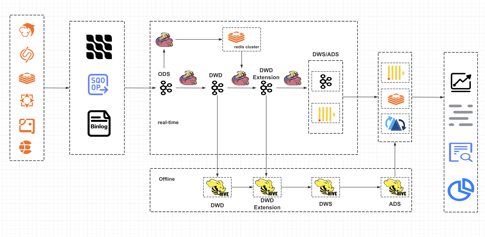

Career Journey
2024/09 – Present
📍 Singapore
GitHub Open-Source Contributions
pytorch / vLLM / DeepSpeed Contributor| AI Infrastructure Engineer
2021/09 – 2024/05
📍 Beijing, China
Buchang Tao Medical Cloud
Java Team Lead
2019/10 – 2021/08
📍 Beijing, China
Medbanks
Senior Java Development Engineer
2017/07 – 2019/09
📍 Beijing, China
WeDoctor Group
Java Development Engineer
[ LoRA Fine-tuning Diagram ]
[ RAG Flow Diagram ]


[ Search Center Architecture Diagram ]
[ Payment Gateway Architecture Diagram ]
[ IM Center Architecture Diagram ]
Core Expertise & Technical Stack
- 1. Proficient in Java and experienced with Python; has good coding standards and programming habits.
- 2. Proficient in using web servers such as Tomcat and Jetty, and familiar with their related configurations.
- 3. Proficient in operating databases such as MySQL, MongoDB, Redis, ElasticSearch, Neo4j.
- 4. Proficient in Spring, Spring MVC, Spring Boot, Spring Cloud, MyBatis / MyBatis-Plus, DDD, with practical experience in encapsulating business with DDD and leading the adoption of DDD in multiple large projects.
- 5. Proficient in using Gradle, Maven, Nexus for project management.
- 6. Familiar with deploying microservices on Linux, and with common commands for Docker, Kubernetes (K8s), Nginx.
- 7. Proficient in using tools such as Git, SourceTree, Eclipse, IntelliJ IDEA, Xshell, FinalShell, Sonar, Jenkins, Offset Explorer, RDM, MongoBooster, Kubeadm, Kibana, JMeter, etc.
- 8. Proficient in using service registries such as Nacos, Eureka.
- 9. Proficient in message middleware technologies such as RocketMQ, Kafka, Pulsar.
- 10. Familiar with Prometheus, SkyWalking, XXL-Job, ZooKeeper, Dubbo, Solr-Cloud, ShardingSphere and other related technologies.
- 11. Familiar with cloud storage and file system solutions such as COS, OSS, MinIO.
- 12. Familiar with communication protocols and frameworks such as Socket.IO, WebSocket, MINA, etc.
- 13. Familiar with mainstream big data technologies and solutions such as Flink, Flink-CDC, Canal, Kettle, Hadoop, Flume, ClickHouse, Hudi, Sqoop, HBase.
- 14. Highly proficient in Flink-CDC, and skilled at planning technical solutions and breaking down tasks into fine-grained items for 0-to-1 projects.
- 15. Led the 0-to-1 implementation of a production-level Prometheus + Grafana monitoring and alerting system integrated with business needs.
- 16. Has extensive experience in microservice architecture design and development.
- 17. Has a holistic DevOps mindset and hands-on experience with parts of the DevOps technology stack.
- 18. Experienced in developing RAG (Retrieval-Augmented Generation) systems for domain-specific question answering.
- 19. Experienced in model fine-tuning and LLM inference acceleration.
- 20. Contributor to top AI projects such as PyTorch, vLLM, DeepSpeed, Transformers, Ray, with a main focus on making more core contributions to PyTorch and vLLM.